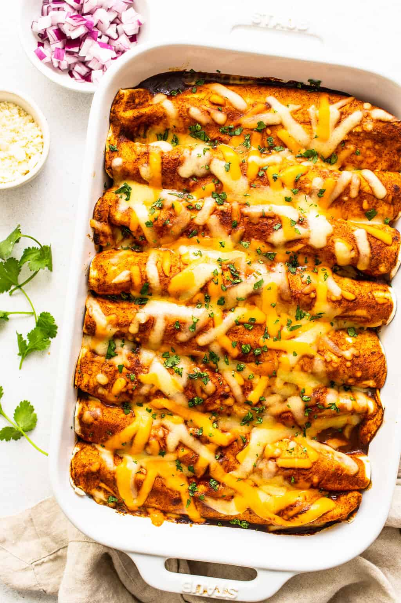

Travis' Signature Enchiladas

There are few recipes I know how to make by heart, but this one I have made my own and prepare from memory!
If I recall correctly, the basis for this recipe came from a college cooking book aimed at providing easy filling meals for students. It is simple to prepare and easy to dress up with a few optional garnishes. If you want to go the extra mile try it with homemade tortillas!
Ingredients
- 1 lb ground beef
- 1 small onion, chopped
- mexican seasoning
- 1 can black beans
- 1 jar salsa
- 1 cup or more grated cheddar cheese
- 1 package large flour tortillas (I prefer the Casa Mendosa brand)
- optional: kernel corn
- optional garnish: sliced avocado, sour cream
Directions
- Preheat oven to 350 F
- Brown beef and onions in large pan over medium heat until all beef cooked through
- Stir in mexican seasoning to taste
- Rinse and drain beans
- Add beans to pan and simmer 2-5 minutes
- Add corn, if using
- Add approx 1 cup salsa to pan. Simmer 5 minutes
- Spoon several tablespoons filling into tortilla
- Roll tortilla shut, both ends folded in. Place in 9x13 pan with seam to the side rather than top or bottom
- Repeat until pan is filled with enchiladas
- If any filling remains spread it on top of enchiladas evenly. Add an even layer of salsa topping
- Top the whole thing with grated cheese, bake until cheese is melted and bubly about 25 minutes
- Serve, topping with desired garnishes